存储器层次结构
本文最后更新于：February 14, 2023 am
Chapter 7: Memory Hierarchy
存储器概述和存储器芯片
首先对常用的术语进行解释:
- 记忆单元: 具有两种稳态的能够表示二进制数0和1的物理器件
- 存储单元: 具有相同地址的位构成一个存储单元，也称为一个编址单位
- 存储阵列: 所有存储单元构成一个存储阵列
- 编址方式:
- 字节编址: 存储单元的地址是一个字节的整数
- 按字编址: 每个地址宽度为一个字的宽度
- MAR: 存储器地址寄存器，用于存放访问主存单元的地址的寄存器
- MDR: 存储器数据寄存器，用于存放与主存单元进行交换的数据的寄存器
存储器分类
- 按工作性质/存取方式分类:
- 随机存取存储器: 每个单元读写时间一样，且与各单元所在位置无关。如: 内存
- 顺序存取存储器: 数据按顺序从存储载体的始端读出或写入，因而存取时间的长短与信息所在位置有关。如: 磁带
- 直接存取存储器: 直接定位到读写数据块，在读写数据块时按顺序进行。如: 磁盘
- 相联存储器: 按内容检索到存储位置进行读写。如: 快表
- 按存储介质分类:
- 半导体存储器: 双极型，静态MOS型(SRAM)，动态MOS型(DRAM)
- 磁表面存储器: 磁盘(Disk)、磁带(Tape)
- 光存储器: CD，CD-ROM，DVD
- 按信息的可更改性分类:
- 读写存储器(Read/Write Memory): 可读可写
- 只读存储器(Read Only Memory, ROM): 只能读不能写
- 按断电后信息的可保存性分类:
- 非易失(不挥发)性存储器: 信息可一直保留，不需电源维持。如: ROM、磁表面存储器、光存储器等
- 易失(挥发)性存储器: 电源关闭时信息自动丢失。如: RAM、Cache等
- 按功能/容量/速度/所在位置分类——层次结构存储系统:
- 寄存器: 封装在CPU内，用于存放当前正在执行的指令和使用的数据，用触发器实现，速度快，容量小
- 高速缓存: 位于CPU内部或附近，用来存放当前要执行的局部程序段和数据，用SRAM实现，速度可与CPU匹配，容量小
- 内存: 位于CPU之外，用来存放已被启动的程序及所用的数据，用DRAM实现，速度较快，容量较大
- 外存: 位于主机之外，用来存放暂不运行的程序、数据或存档文件，用磁表面或光存储器实现，容量大而速度慢
主存结构
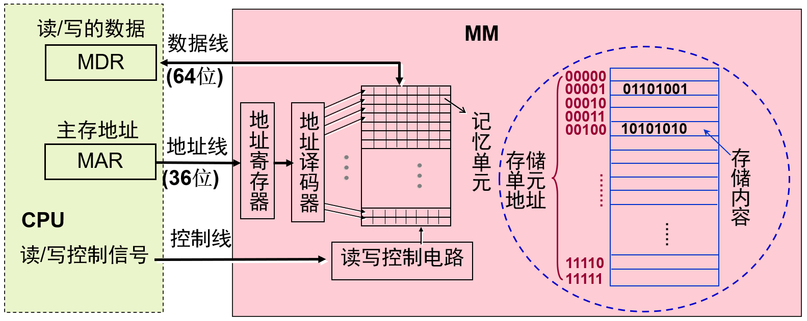
当CPU需要从主存中取指令或数据时，需要将地址放入MAR中并同时通过控制线告知读写控制电路，主存从MAR中取得地址并译码，取数后将数据传送到MDR中，CPU从MDR中拿到数据完成整个取指或取数。流程图如下:
flowchart TB
MAR("MAR")
MDR("MDR")
CPU("CPU")
CTL("读写控制电路")
DEC("地址译码器")
MEM("存储单元")
CPU-->MAR
MAR-->DEC
DEC-->MEM
CPU-->CTL
CTL-->MEM
MEM-->MDR
MDR-->CPU
在上图中MAR与地址译码器之间的地址线宽度为36位因此主存地址空间大小=(按字节编址)，但主存容量为实际安装的主存大小。数据线宽度为64位，因此一次读写最大为64位=8B。
主存的主要性能指标
- 存储容量: 所包含的存储单元的总数
- 存取时间: 从CPU送出内存单元的地址码开始，到主存读出数据并送到CPU(送到MDR)所需要的时间
- 存储周期: 连读两次访问存储器所需的最小时间间隔，它等于存取时间加上下一次存取开始前所要求的附加时间因为存储器的读出放大器、驱动电路等都有一段稳定恢复时间，所以读出后不能立即进行下一次访问
各半导体芯片的读写原理
SRAM
SRAM的电子基础元件为6管静态NMOS记忆单元。
- 写入时: 位线上是被写入的二进位信息0或1，字线为1，则存储单元设置为位线数据
- 读出时: 两个位线均为高电平(1)，字线为1，输出位线则为输出数据
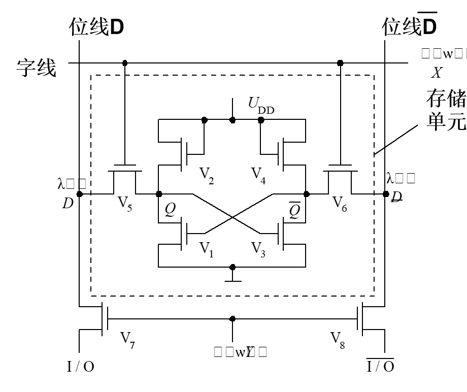
SRAM中数据保存在双稳态触发器中，只要供电，数据就一直保持，不是破环性读出，也无需重写，也无需刷新。
DRAM
DRAM的电子基础元件为MOS管的栅极电容。
- 写入时: 字线为1，位线放置写入数据，存储单元设置为位线数据
- 读出时: 字线为1，位线放置读出电压，输出位线则为输出数据
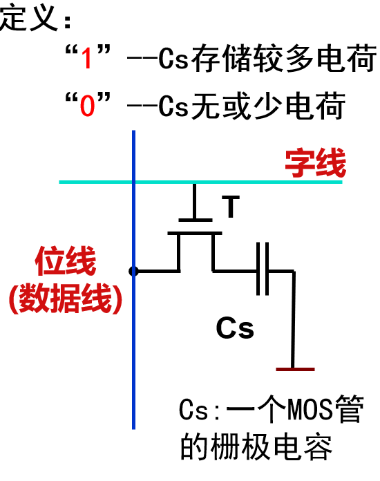
DRAM为破坏性读出，即读出时Cs上的电荷会被放电，为此读后需要再生，用读出的数据再写入。并且实际的Cs有漏电，一定时间后存储的电荷会消失，为此需要定时地向Cs补充电荷，称此操作为刷新。
ROM
ROM具有信息只能读不能(在线)写、非破坏性读出、随机存取方式、不受断电影响的特点。
常见的ROM:
- MROM(Mask ROM): 掩膜只读存储器
- PROM(Programmable ROM): 可编程只读存储器
- EPROM(Erasable PROM): 可擦除可编程只读存储器
- EEPROM(PROM, Electrically EPROM): 电可擦除可编程只读存储器
- flash memory: 闪存(快擦存储器): 快擦型电可擦除重编程ROM
Flash
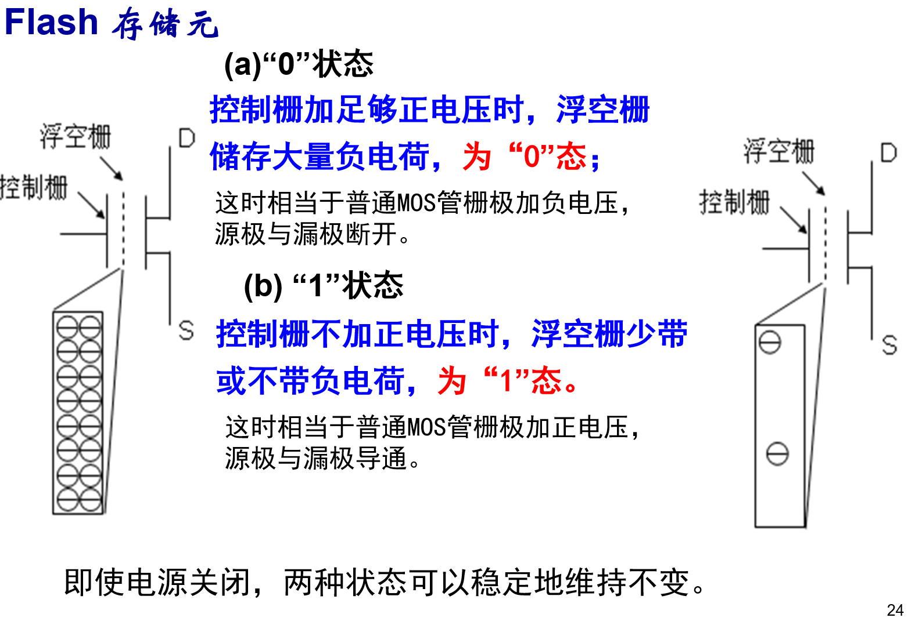
- 擦除: 所有单元都同时写1
- 编程: 只对需要之处写0
- 读取: 控制栅加正电压，若状态为0，则读出电路检测不到电流，若状态为1，则读出电路检测到电流
即使电源关闭，两种状态可以稳定地维持不变。因此无需刷新，无需重写，不怕断电。
DRAM刷新
在上面DRAM原理时说到，DRAM存在漏电情况，在不供电时数据只能维持几十毫秒，为保证信息不丢失需要定期刷新。刷新操作即读操作。刷新按行进行，所有芯片中的同一行同时刷新。刷新周期: 从上次对整个存储器刷新结束到下次对整个存储器全部刷新一遍为止的时间间隔，也就是对某个特定行进行刷新的时间间隔目前多数情况下是64ms。
刷新方式:
- 集中刷新: 在刷新周期内集中安排所有行的刷新
- 分散刷新: 各行的刷新分散安排在每个存取周期中
- 异步刷新: 所有行刷新分散安排在1个刷新周期内，每隔一段时间刷新一行即可定时刷新一行
主存与CPU的连接及其读写操作
CPU和主存之间有同步和异步两种通信方式。
- 异步方式过程(需要握手信号):
- CPU送地址到地址线，主存进行地址译码
- CPU发读命令，然后等待存储器发回"完成"信号
- 主存收到读命令后开始读数，完成后发"完成"信号给CPU
- CPU接收到"完成"信号，从数据线取数
- 同步方式:
- CPU和主存由统一时钟信号控制，无需应答信号(完成信号)
- 主存总是在确定的时间内准备好数据
- CPU送出地址和读命令后，总是在确定的时间取数据
- 存储器芯片必须支持同步方式，如SDRAM芯片
SRAM同步存储芯片:
- 每步操作都在系统时钟控制下进行(上升沿和下降沿)
- 有确定的等待时间(读命令开始到数据线有效的时间)因此无需信号沟通
- 多体(缓冲器)交叉存取
- 突发传输方式: 一个时钟周期内连续传送多个数据。在一个时钟周期内SDRAM可以突发传输1个数据，DDR SDRAM可以突发传输2个数据，DDR2可以突发传输4个数据，DDR3可以突发传输8个数据。
存储器容量扩展
由前面可以知道存储器最小编址单位是字节，而一个字节内有8位。当存储器容量不足时，即需要扩展，存储器容量的扩展可以有字扩展、位扩展和字位同时扩展三种情况。
字扩展例: 用16K 8位芯片扩成64K 8位存储器需几个芯片？地址范围各为什么？
芯片位数与存储器位数相同，因此位方向无需位扩展，字方向扩展需要4个芯片。每个芯片16k=，因此片内地址有14位，4片芯片需要2位进行片选，存储器编址应为16位。第一片地址范围为0000 0000 0000 0000(0000H) ~ 0011 1111 1111 1111(3FFFH)，第二片地址范围为0100 0000 0000 0000(4000H) ~ 0111 1111 1111 1111(7FFFH)，第三片地址范围为1000 0000 0000 0000(8000H) ~ 1011 1111 1111 1111(BFFFH)，第四片地址范围为1100 0000 0000 0000(C000H) ~ 1111 1111 1111 1111(FFFFH)。
位扩展例: 用4K 1位芯片构成4K 8位存储器需几个芯片？地址范围各是多少？
芯片字地址与存储器字地址相等，字方向无需扩展，在位方向需要扩展8倍，因此需要8个芯片。因为按字节编址，字地址总共为4k=因此需要12位做地址编码，8个芯片的地址范围均为0000 0000 0000(000H) ~ 1111 1111 1111(FFFH)。而无需片选，因为芯片地址线与读/写控制线相接，数据线需要单独引出。
字位同时扩展例: 16K×4位芯片构成64K×8位存储器需几个芯片，地址范围各是多少？
位方向需要扩展2倍，字方向需要扩展4个芯片，因此需要4 2=8张芯片因为有字扩展，因此同样有片选字段和片内地址两部分组成编址，地址范围与字扩展例相同，位扩展数据线需单独引出。第一片地址范围为0000 0000 0000 0000(0000H) ~ 0011 1111 1111 1111(3FFFH)，第二片地址范围为0100 0000 0000 0000(4000H) ~ 0111 1111 1111 1111(7FFFH)，第三片地址范围为1000 0000 0000 0000(8000H) ~ 1011 1111 1111 1111(BFFFH)，第四片地址范围为1100 0000 0000 0000(C000H) ~ 1111 1111 1111 1111(FFFFH)。
扩展后地址分配和片选逻辑
存储器寻址逻辑:
- 芯片内寻址系统
- 芯片外地址分配和片选逻辑
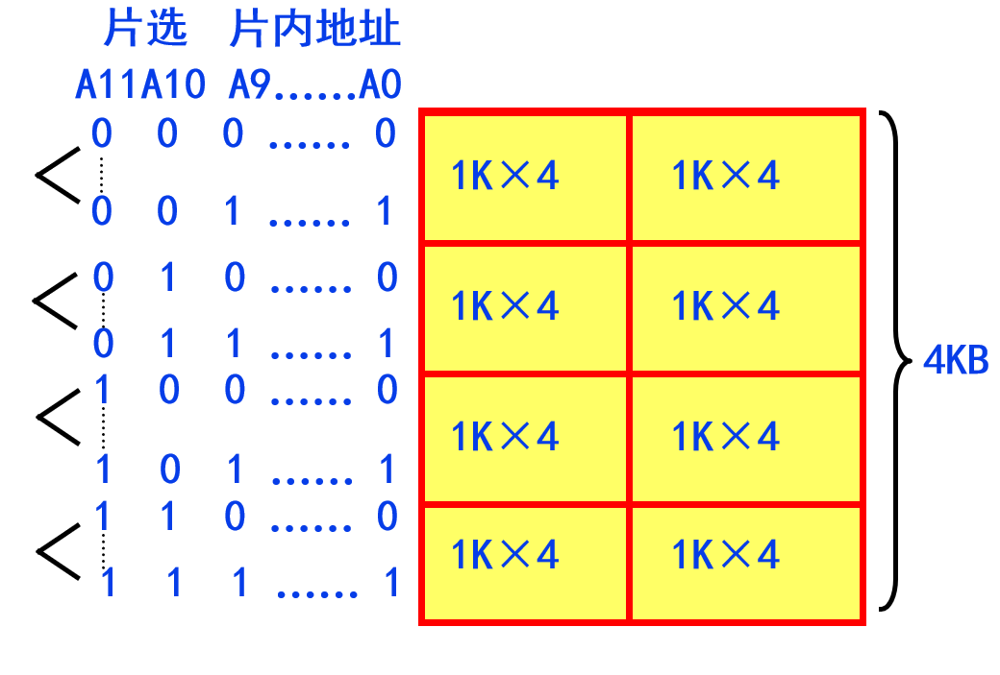
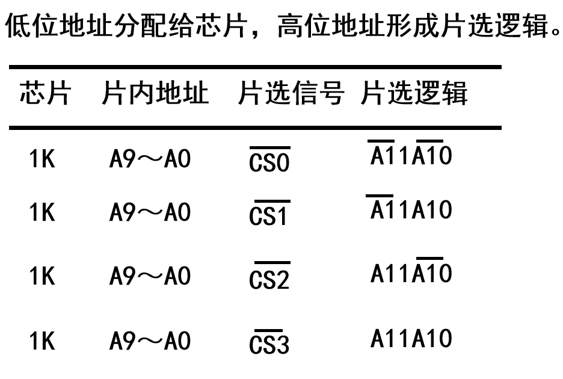
高速缓冲存储器(Cache)
程序访问的局部性: 空间局部性和时间局部性，原因: 指令按序存放，地址连续，循环程序段或子程序重复执行，数据连续存放，数组元素重复、按序访问。
为加快访存速度提出了cache的概念。cache: 在CPU和主存之间的一个快速小容量的存储器，其中总是存放最活跃(被频繁访问)的程序和数据，由于程序访问的局部性特征，大多数情况下，CPU能直接从cache中取得指令和数据，而不必访问主存。
cache组成与原理
cache是一种小容量高速缓冲存储器，它由SRAM组成，直接制作在CPU芯片内，速度几乎与CPU一样快。程序运行时，CPU使用的一部分数据/指令会预先成批拷贝在cache中，cache的内容是主存储器中部分内容的映象。当CPU需要从内存读(写)数据或指令时，先检查cache，若有，就直接从cache中读取，而不用访问主存储器。
graph TD
Start("开始")
AD["CPU给出主存地址AD"]
Judge{"CPU读写指令或数据"}
Cache_send["从cache中取信息送CPU"]
MM_fetch["从主存取出AD单元所在块"]
cache_spare["在cache中找到一个空闲行"]
MM_send["将AD单元内容送CPU"]
MM_project_cache["将主存块的数据拷贝到cache中"]
End("结束")
Start-->AD
AD-->Judge
Judge-->|"是"|Cache_send
Cache_send-->End
Judge-->|"否"|MM_fetch
MM_fetch-->cache_spare
cache_spare-->MM_send
cache_spare-->MM_project_cache
MM_send-->End
MM_project_cache-->End
cache实现
cache结构为:
| V | TAG | DATA |
|---|---|---|
| 有效位 | 标志位 | 数据区 |
- V: 有效位，表示该行cache是否有效
- TAG: 标志位，表示该行cache来源于主存的哪个主存块群或主存块号或组群(根据映射关系决定)
- DATA: 数据区，存放主存数据的复制
- 分块: 把访问的局部主存区域设定为块，将整个主存空间分为多个块。主存每次和cache之间的传送单位为一个块的大小，根据块大小将主存划分为不同的块
- 主存块与cache行进行映射: cache行数量远远小于主存块数量，因此需要将主存块映射到cache行，共有以下三种映射方式:
- 直接映射: 即取模运算映射，cache行号=主存块号 mod cache行数，如cache行数16行，则第100号块映射行号=100 mod 16 = 4，注意编号都是从0开始。
主存块群的概念: 对所有主存块而言，每cache行数个块组成一个群，因此主存块号就可以分为主存块群号和cache群号两部分，因此可以快速得到cache行号。
例: 设cache有16行，主存有2048块，一个块容量为512B。
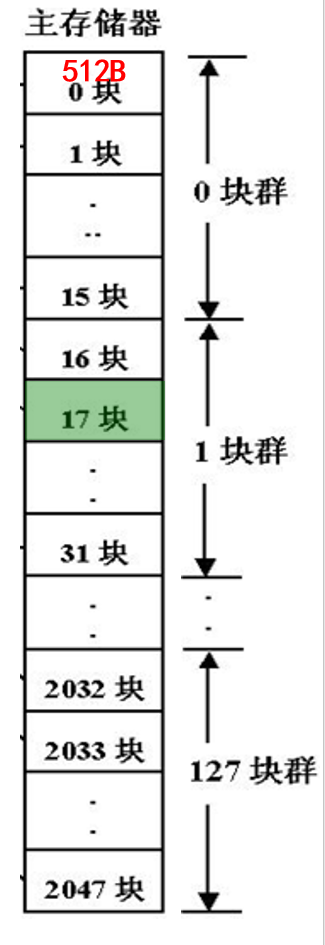
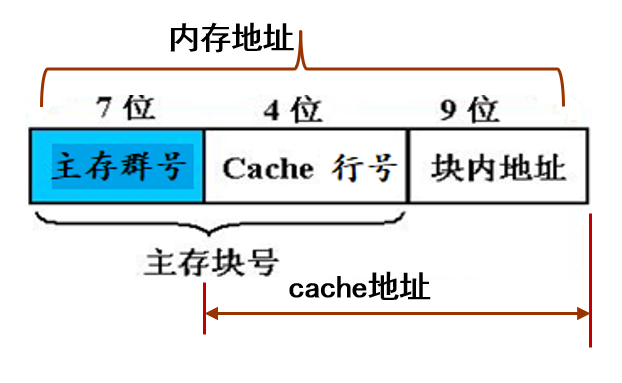
则地址为0000 0010 0010 0000 1100的块位于cache中的第一行。前七位0000 001=1块群，中四位0001=1块因此该地址位于主存第一块群第一块，对应cache中第一行(从0开始)。
直接映射的特点:- 实现简单，命中检测时间短
- 无需考虑淘汰（替换）问题
- 但不够灵活，Cache存储空间得不到充分利用，命中率低
例如，对于16行的Cache，若要将主存第0块与第16块同时复制到Cache中。
由于它们都只能复制到Cache第0行，即使其它行空闲，也有一个主存块不能写入cache。这样就会产生频繁的cache装入
- 全相联映射: 主存中任意的一块都可以装载进cache的任意一行，而没有固定的映射方式。cache行内的TAG字段即为主存块号。
例: 设cache有16行，主存有2048块，一个块容量为512B。
不再分群，任何一块都可映射进空闲行。
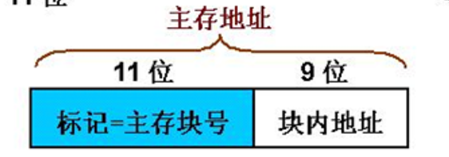
则地址为0000 0001 1110 0000 1000可能位于cache中的任意行。前十一位0000 0001 111=15块标志着其来源于主存的第十五块，因此在查询cache时需要同时比较所有cache行的TAG字段，找到主存块号为15的行然后送CPU。 - 组相联映射: 组相联映射是直接映射和全相联映射两者的结合将cache分为个组，每个主存块只能映射到一个固定组，每组的行数称为路，但可以在组内选择任何一行进行映射。cache组号=主存块号 mod cache组数，行号为组内任意空闲行。
例: 设cache有16行，主存有2048块，一个块容量为512B。
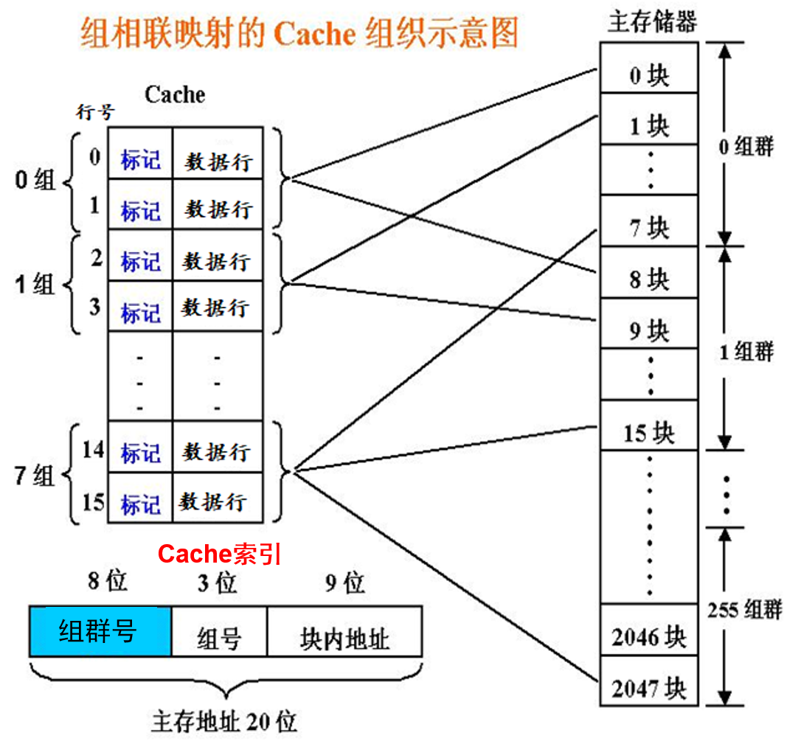
则地址为0000 0001 0010 0000 1100位于第一组内的任意空闲行，前八位0000 0001=1组群，中三位001=1组，在查询cache时需要对组内所有行进行通过比较TAG，再送CPU
当通过全相联映射和组相联映射时，可能找到的行均为非空闲状态，因此需要从多个非空闲行中选择一个淘汰掉并装入新块，这就需要替换算法来进行选择。常用的替换算法有: - FIFO: 先进先出算法，把最线进入的块淘汰掉
- LRU: 最近最少使用算法，即最近未被使用的行被替换。
- LFU: 最不经常用算法
- Random: 随机替换算法，随机选择一行进行替换。
- 直接映射: 即取模运算映射，cache行号=主存块号 mod cache行数，如cache行数16行，则第100号块映射行号=100 mod 16 = 4，注意编号都是从0开始。
- 保存cache与主存一致: 因为cache中的内容是主存块的副本，当对cache中的内容进行更新时，就存在Cache和主存如何保持一致的问题。对写操作而言有两种情况:
- 写命中: 要写的单元已经在cache中，处理方式有:
- Write Through(全写): 同时写cache和主存，但可以在cache和主存见增加缓存来提高效率
- Write Back(只写cache): 只写cache，主存不变，可以在cache增加修改位，当被替换时才回写内存，但实现很复杂
- 写未命中: 要写的单元不在cache中
- Write Allocate(写分配): 将主存块装入cache然后同时更新cache和主存
- Not Write Allocate(不写分配): 直接写主存而不将主存装入cache
- 写命中: 要写的单元已经在cache中，处理方式有:
虚拟存储器(Virtual Memory)
VM的思想: 把地址空间和主存容量的概念区分开来。程序员在地址空间里编写程序，而程序则在真正的内存中运行。由一个专门的机制实现地址空间和实际主存之间的映射。
分页
基本思想:
- 内存被分为固定长且小的存储块: 实页(页框)
- 进程被划分为固定长的程序块: 页(虚页)
- 程序块可装到内存中可用的存储块中
- 通过页表实现逻辑地址与物理地址的转换(从虚页到实页，页表存储在主存中)
无需将进程全部页均装入到内存中，而是通过按需调页的方式分配内存，当需要时才从外存调页进入内存。
早期分页实现
早期内存只有一个页框(即整个内存大小作为一个页)，将地址空间按照页框大小进行分割。
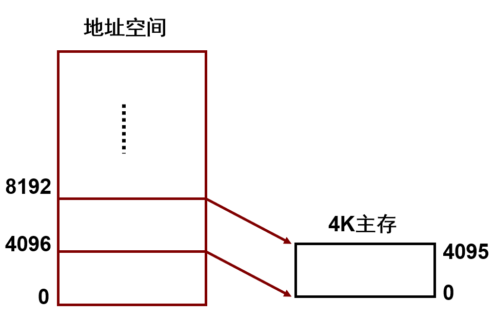
将地址空间执行到某个区间时，把该区间的地址自动映射到0~4095之间，其余部分在外存中存储。
现代虚拟存储技术
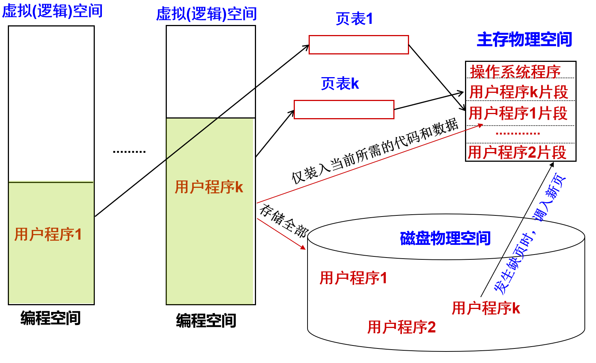
| 装入位 | 修改位 | 替换控制位 | 其他··· | 实页号(八进制) |
|---|---|---|---|---|
| 1 | 0 | 0 | ··· | 11 |
| 1 | 0 | 1 | ··· | 13 |
虚页号是页表从上到下的行数，从0开始计算。
页表的项数理论上由虚拟地址空间大小决定，即理论上每个进程都可以占据全部虚拟地址空间。
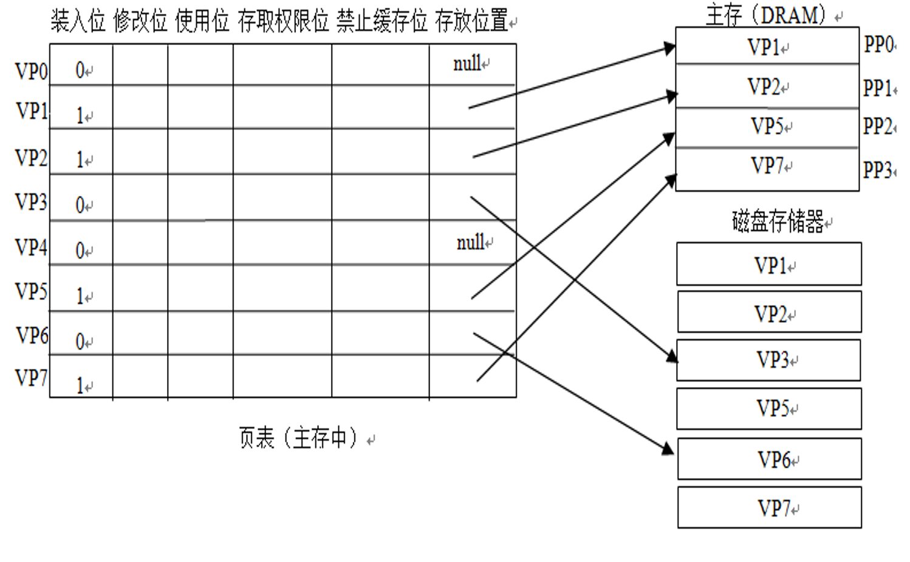
- 未分配页: 进程的虚拟地址空间中"空洞"对应页(VP0、VP4)
- 已分配的缓存页: 有内容并已装入主存的页(VP1、VP2、VP5)
- 已分配的未缓存页: 有内容但未装入主存的页(VP3、VP6)
虚页与实页之间采用全相联方式进行映射，但高位地址为虚页号
当使用逻辑地址去查询页表得到物理地址时可能会出现两种异常情况:
- 缺页: V位为0时即为缺页。
处理方法: 阻塞操作指令，从外存将该页读到内存中。若内存没有空间，则还要从内存选择一页替换到磁盘上，替换算法类似于cache，采用回写法，淘汰时，根据修改位位确定是否要写磁盘 - 保护违例(访问违例): 当存取权限与具体操作不相符时发生。
处理方法: 指令阻塞，进程终止，抛出异常。
TLB(快表)
把经常要查的页表项放到cache中，这种在cache中的页表项组成的页表称为Translation Lookaside Buffer或TLB(快表)。通过TLB可以减少到内存查页表的次数
快表中的页表项比主存中的页表项多一个tag标志: TLB item = tag + page item
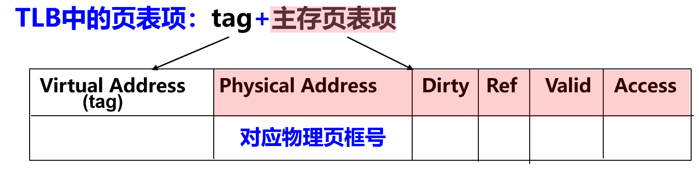
因此主存中的页表项一定多于cache中的快表页表项，因此同样存在映射方法，或直接映射或全相联映射或组相联映射。当为全相联映射时，虚页号需要与快表中每个tag相比较。当为组相联时，需要与组内每个tag相比。
层次结构存储系统下CPU访存过程
CPU访存过程如流程图所示:
flowchart TD
VA["CPU给出虚拟地址VA"]
TLB_judge{"对应页表项在TLB中?"}
VA-->TLB_judge
subgraph "TLB缺失处理"
MM_page["访问主存页表"]
MM_judge{"页表项在主存中?"}
TLB_update["更新TLB并将VA转为物理地址PA"]
MM_page-->MM_judge
end
TLB_judge-->|否|MM_page
TLB_judge-->|是|TLB_update
subgraph "缺页处理"
MM_spare{"主存存在空闲页框?"}
MM_judge-->|"否，缺页"|MM_spare
MM_replace["从主存中换出一页"]
MM_write["从外存读出一页到主存"]
MM_update["更新页表和TLB并将VA转换为物理地址PA"]
MM_spare-->|是|MM_write
MM_spare-->|否|MM_replace
MM_replace-->MM_write
MM_write-->MM_update
end
VA2PA["VA转换为物理地址PA"]
TLB_update-->VA2PA
MM_update-->VA2PA
cache_judge{"对应主存块在cache中?"}
VA2PA-->cache_judge
subgraph "cache缺失处理"
cache_spare{"cache存在空闲页框?"}
cache_replace["从cache中换出一行"]
cache_write["从内存读出一行到cache并标记有效位"]
cache_spare-->|是|cache_write
cache_spare-->|否|cache_replace
cache_replace-->cache_write
end
get_cache["从cache中读取数据"]
cache_judge-->|是|get_cache
cache_judge-->|否|cache_spare
cache_write-->get_cache
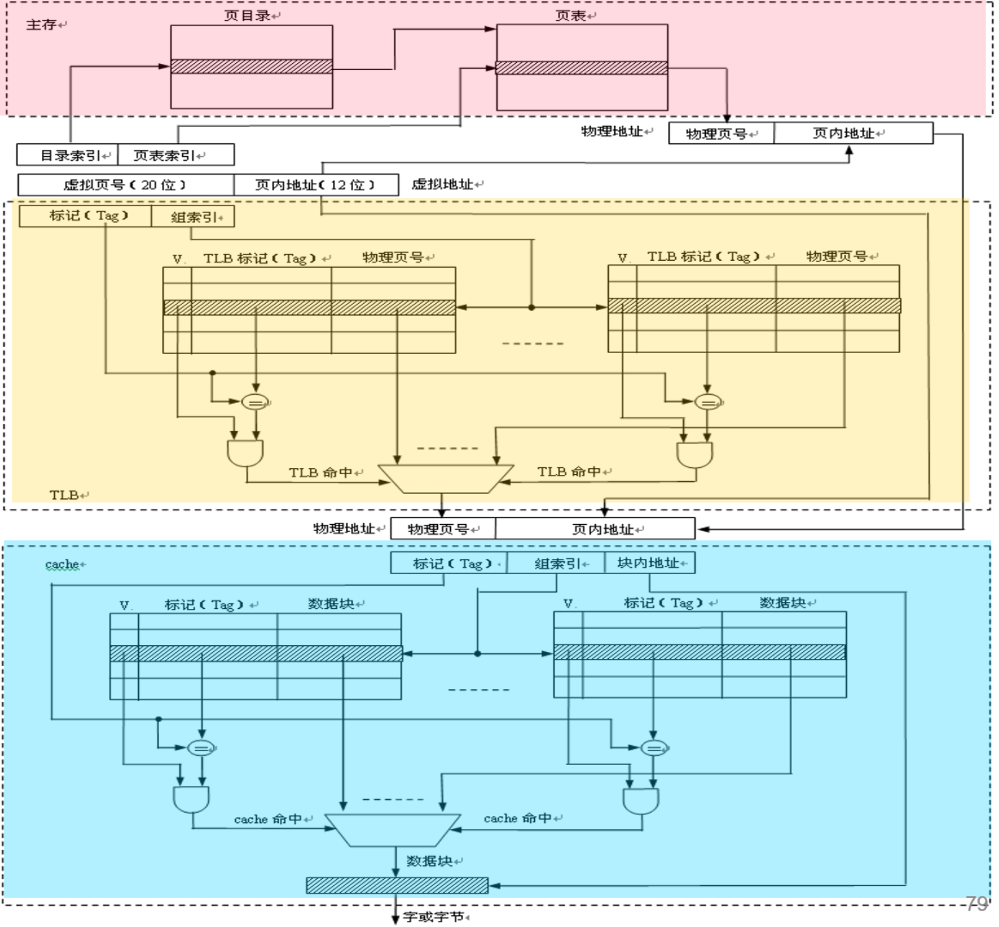
本博客所有文章除特别声明外，均采用 CC BY-SA 4.0 协议 ，转载请注明出处！